透鏡第 1 節・老師排練
10/12（一）甲班第 7 節 15:00–15:45 ｜ 照著這頁走一次就會
這節課只要學生記住一件事：
中間厚的鏡片（放大鏡）→ 字變大、光聚起來
中間薄的鏡片（近視眼鏡、貓眼）→ 字變小、光散開
你不用講原理講到很懂。學生只要能「摸出中間厚、中間薄」，再「說出變大、變小」，這節就成功了。
1
開場：丟出謎題
PPT 1–2・3 分
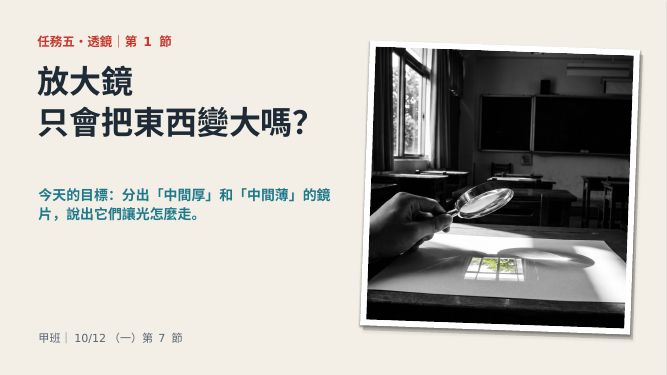
P1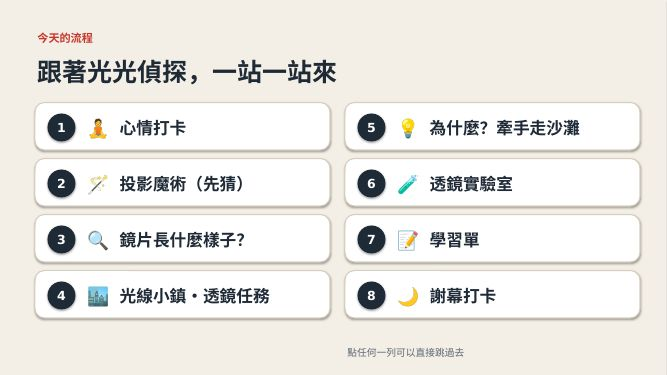
P2你說
今天我們當透鏡偵探
放大鏡，只會把東西變大嗎？先不要說答案
學生做
心情打卡（P2 點第 1 列），回答「會／不會」就好
P2 是路線圖，點哪一列就跳到哪一頁。做完一段，可以請一位學生上台點下一段。
2
投影魔術：先猜，不公布
PPT 3・5 分
手上拿
放大鏡＋一張白紙。站在教室後面，放大鏡對著窗戶，白紙在後面慢慢前後移動，直到窗外景色清楚出現在紙上
你說
看！窗外的景色跑到白紙上了
白紙上的景色是正的？還是倒過來？舉手
按鍵
按 1出現 A 正的／B 倒過來 按 2出現「答案藏在光線小鎮」
大部分學生會猜「正的」，不要糾正。答案留到光線小鎮第 2 站，讓他們自己發現「倒過來」。窗簾拉一半，教室後面暗一點，紙上才看得清楚。
3
摸鏡片：中間厚、中間薄
PPT 4–5・7 分
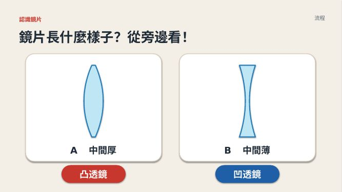
P4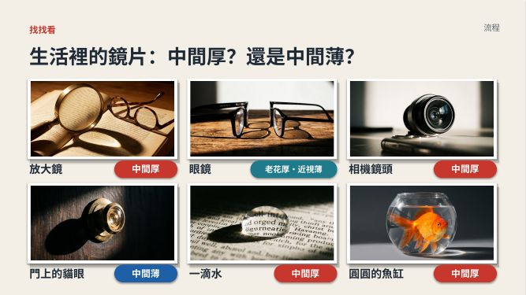
P5手上拿
每桌一支放大鏡＋一副近視眼鏡（你自己的或借的）
你說
用手指摸摸看，鏡片中間是鼓鼓的，還是凹凹的？
中間厚的叫凸透鏡，中間薄的叫凹透鏡
凸這個字中間突出來，凹這個字中間凹下去
學生做
摸放大鏡、摸眼鏡；用手勢回答（雙手捧成球＝中間厚，雙手做凹槽＝中間薄）
按鍵
P4：按 1凸透鏡 按 2凹透鏡
P5：生活照片，每按一下翻一個答案（共 6 下），先讓學生猜再按
4
光線小鎮：自己去發現
PPT 6–10・12 分
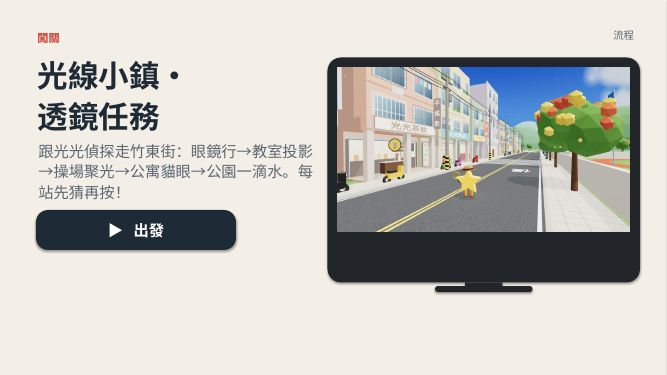
P6 出發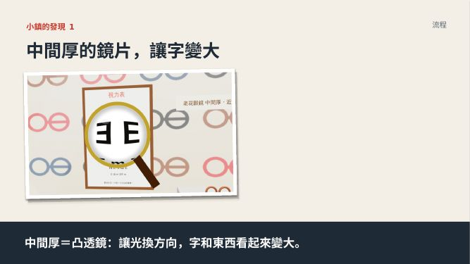
P7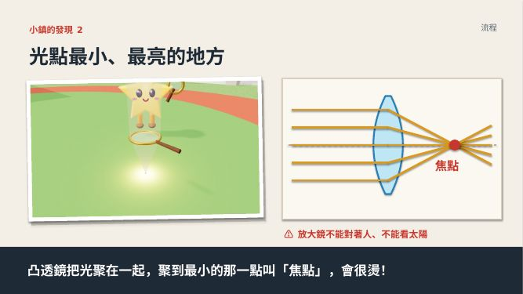
P8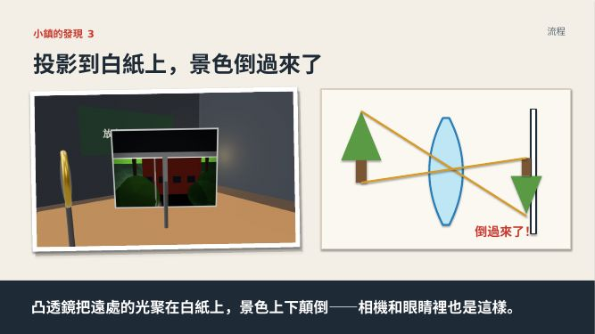
P9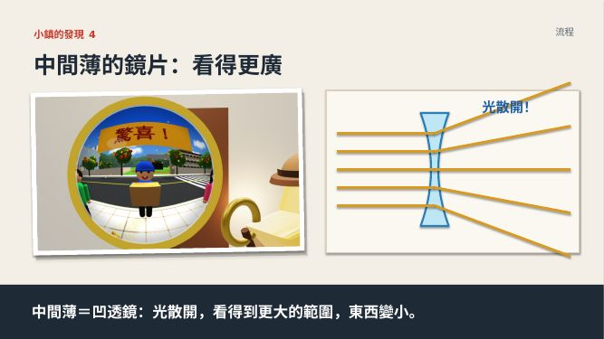
P10怎麼做
P6 點「出發」→ 光線小鎮。5 站，每站請一位學生上台按，其他人先猜。
第 2 站「教室投影」停一下：「看！倒過來了！投影魔術的答案是 B」
回來後
P7–P10 是「小鎮的四個發現」，每頁按一下出現一句，全班一起唸就好
P8 一定要講：⚠ 放大鏡不能對著太陽、不能對著人（焦點很燙）。
5
為什麼？牽手走沙灘
PPT 11–17・8 分
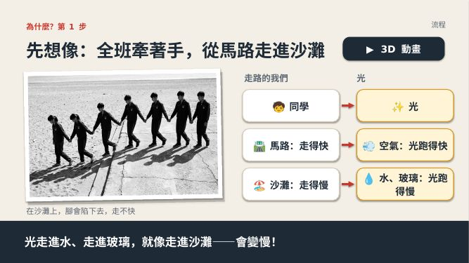
P11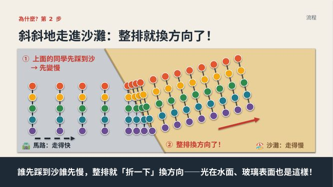
P12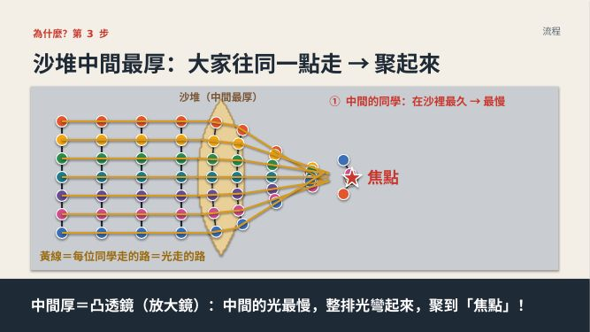
P13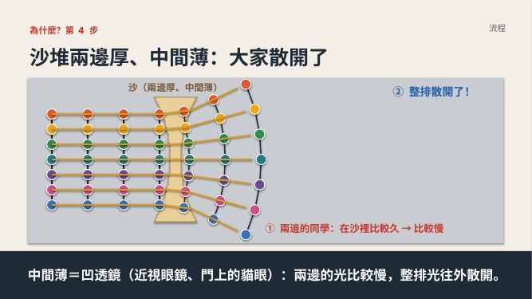
P14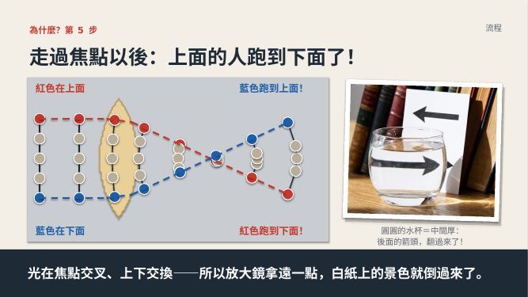
P15 可跳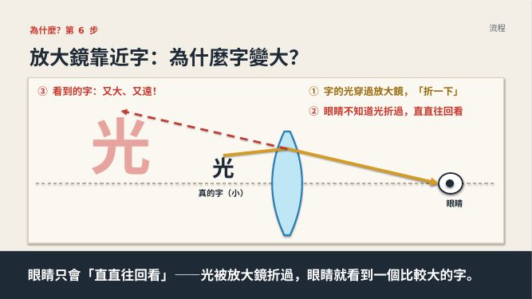
P16 可跳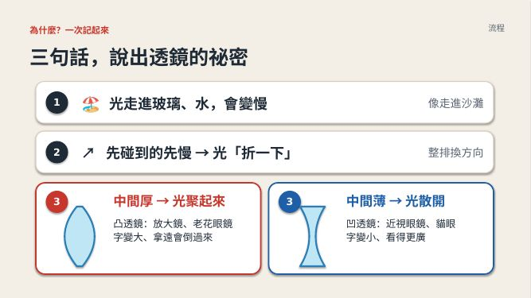
P17你只要講
大家手牽手從馬路走進沙灘，沙灘走得慢
光走進玻璃，也會變慢，所以會折一下
中間厚的鏡片，光聚起來；中間薄的鏡片，光散開
按鍵
每頁就是一直按，圓點小人會一步一步走。P11 右上有「3D 動畫」按鈕，想讓學生看小人真的走可以點
時間不夠：只講 P11、P13、P14、P17，P12、P15、P16 直接按過去。這段講不懂沒關係，學生記得「厚＝聚、薄＝散」就好。
6
比一比、寫學習單、收尾
PPT 18–22・10 分
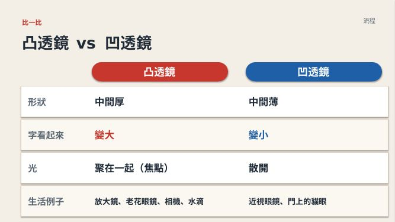
P18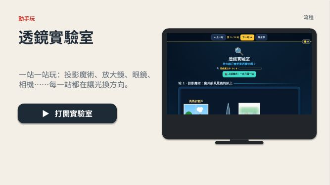
P19 跳過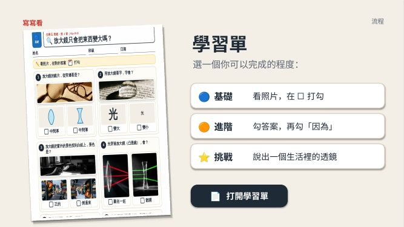
P20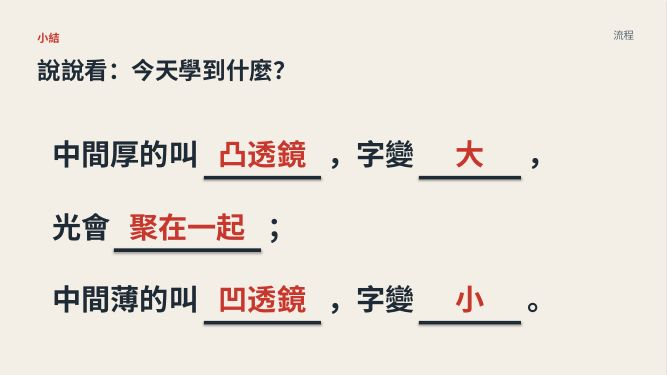
P21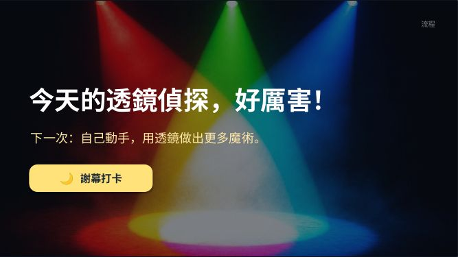
P22P20 學習單
發勾選學習單：🔵 看照片打勾、🟠 先勾答案再勾「因為」。學生選做得到的那張
P21 小結
中間厚的叫凸透鏡，字變大，光會聚在一起；中間薄的叫凹透鏡，字變小
上課前 10 分鐘準備
- 每桌一支放大鏡、一張白紙
- 一副近視眼鏡（摸「中間薄」用）
- 窗簾拉一半
- 勾選學習單 🔵🟠 各印一份
- 電腦先開好 PPT，按 F5 從頭播放